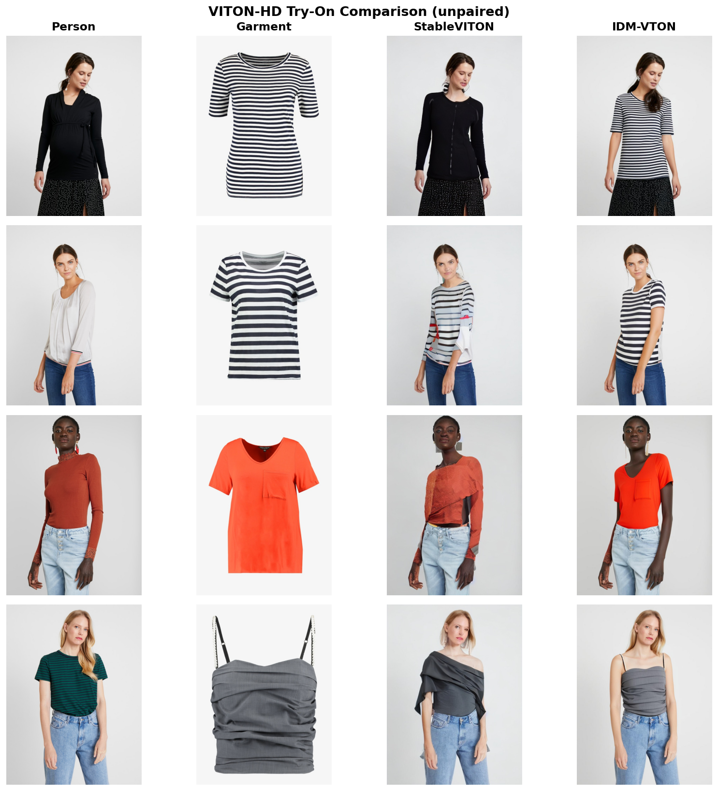
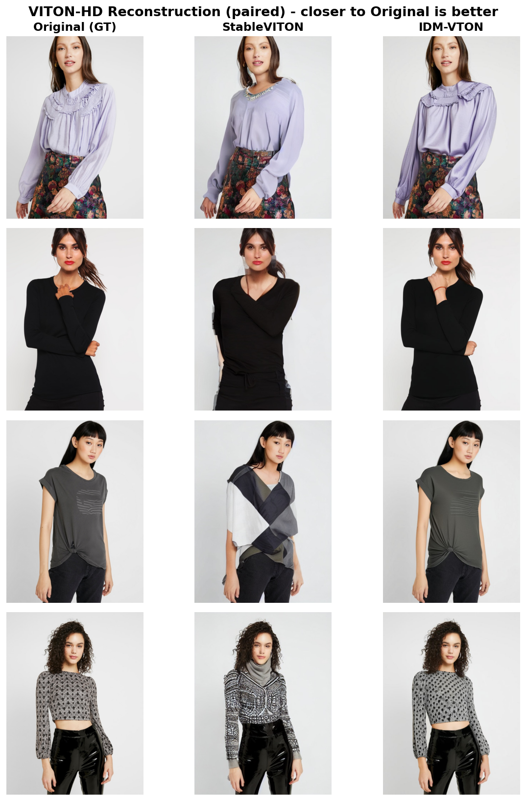

Two state-of-the-art diffusion-based virtual try-on models (StableVITON · IDM-VTON) were inferred with their official checkpoints,
compared on 2,032 VITON-HD pairs under identical conditions using SSIM · LPIPS · FID, and shipped as a live demo.
Pick a sample (person) to see the inputs (① person photo → ② garment region removed → ③ garment to apply) → both models' outputs. (Pre-generated result comparison.)
If the demo does not load, open in a new tab
※ The two models require different torch versions, so they cannot run in the same server process, and on a free CPU diffusion inference is far too slow to be practical. The demo therefore presents pre-generated results for comparison.
StableVITON and IDM-VTON are already trained on VITON-HD and publicly released. Re-training on the same data adds little value; what matters more is fairly measuring which model performs better under identical conditions, in a reproducible way. This project uses the official code and checkpoints as-is for inference, while the evaluation, visualization, and demo were implemented to compare the two models on equal footing.
Actually running and comparing research-grade open-source code was itself the core difficulty.
| Challenge | What happened |
|---|---|
| Dependency conflicts | The two models require different library versions; installing them in one environment broke things → separate conda environments per model |
| Newer-GPU incompatibility | The officially recommended version (torch cu117) did not run on the experiment GPU (H100), requiring debugging to a compatible build (cu118) |
| Corrupted checkpoint | A weight file from the official source (OneDrive) was truncated and would not open → re-obtained from a HuggingFace mirror |
| Cannot compare simultaneously | Differing torch versions meant both models could not be loaded in one process → inferred separately, then compared the saved results |
| Generalization barrier | Another dataset (DressCode) uses a different input format (densepose), so a fair generalization comparison was not directly possible (see Insights) |
| Model | Family | Output resolution | Characteristics |
|---|---|---|---|
| StableVITON | Latent Diffusion (ControlNet-style) | 512×384 | cross-attention warping for garment alignment |
| IDM-VTON | Latent Diffusion + IP-Adapter | 768×1024 | dual encoding of garment appearance & detail, high resolution |
| Dataset | VITON-HD test, 2,032 pairs (upper-body try-on) |
| Model inputs | person image + garment image + 3 preprocessed maps — agnostic (person with garment removed) · densepose (body-part map) · human parse (region segmentation) |
| Preprocessing source | used the maps provided by VITON-HD as-is (no separate generation) |
| Fairness | fed both models the identical (person, garment) pairs, with seed fixed to 42 |
※ HR-VITON (GAN, 2022) was also a candidate but excluded because it was incompatible with the experiment GPU (H100, sm_90) and torch 1.8.2.
The same model is inferred in two modes, each evaluated with the metric that fits its nature.
Because the two models output different resolutions (512×384 vs 768×1024), to compare them on equal footing SSIM·LPIPS resize both results to a common size, while FID — which measures the distance between the overall distributions rather than individual images — processes everything at a fixed size internally, so it is unaffected by the resolution difference.
| Model | SSIM ↑ | LPIPS ↓ | FID ↓ |
|---|---|---|---|
| StableVITON | 0.7975 | 0.1966 | 15.63 |
| IDM-VTON | 0.8847 | 0.0792 | 9.25 |
IDM-VTON recorded higher performance on all three metrics (SSIM +0.087, LPIPS −0.117, FID −6.39). It consistently led on both reconstruction fidelity (SSIM·LPIPS) and generation realism (FID).


The gap was largest on LPIPS (0.079 vs 0.197, ~2.5×). Thanks to its higher output resolution (768×1024) and its structure that encodes garment appearance and detail together, IDM-VTON preserved texture, logos, and wrinkles better. StableVITON (512×384) is lighter and faster but lags on detail — interpreted as a quality–speed trade-off.
Both models are trained on VITON-HD, an in-domain dataset. I therefore wanted to additionally check whether performance holds on an unseen dataset (DressCode), i.e. generalization. (Since both models are trained on upper-body try-on, I planned to use only the upper-body category of DressCode for a fair comparison.)
However, it was deferred because the densepose input format differs. The models were trained on VITON-HD-format densepose, and even after converting DressCode's densepose by standard means, the format did not match exactly.
Feeding mismatched input would unfairly lower the scores and distort the comparison. Getting it exactly right would require re-running the preprocessing model (detectron2), which I judged not worth the cost, so I deferred it and left it as future work.